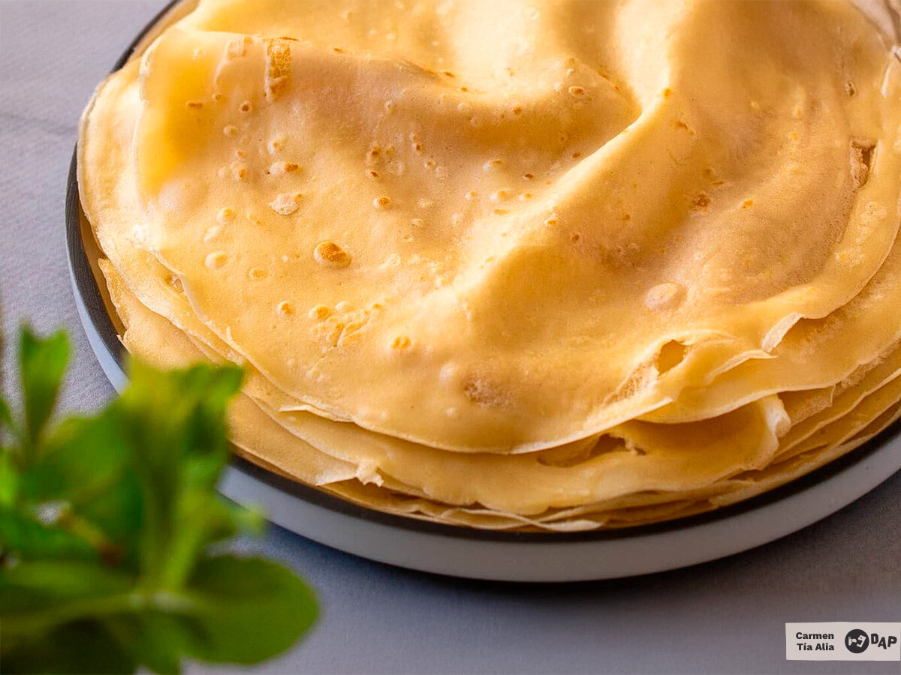

Receta fácil de crepes

Ingredientes
- 2 huevos
- 110g de harina
- 240ml de leche
- 15g de azúcar
- 2g de sal
- Ralladura de limón al gusto
- Esencia de vainilla al gusto
- Aceite
Procedimiento
-
Mezclar los líquidos y aromatizantes: Batir huevos, leche (o bebida vegetal), agua opcional, azúcar,
sal y ralladura de limón o vainilla.
- Incorporar la harina: Añadir la harina tamizada y batir bien hasta que no queden grumos.
-
Reposar la masa: Tapar y dejar reposar mínimo 30 minutos (mejor 1 hora) en la nevera si hace calor.
- Preparar la sartén: Engrasar con aceite o mantequilla derretida y calentar bien.
-
Cocinar los crepes: Verter una porción de masa, girar la sartén para extenderla, cocinar 1–2 minutos
hasta dorar los bordes, dar la vuelta y dorar otro minuto.
-
Mantener calientes: Retirar a un plato, cubrir con un paño o film y continuar con el resto de la
masa.